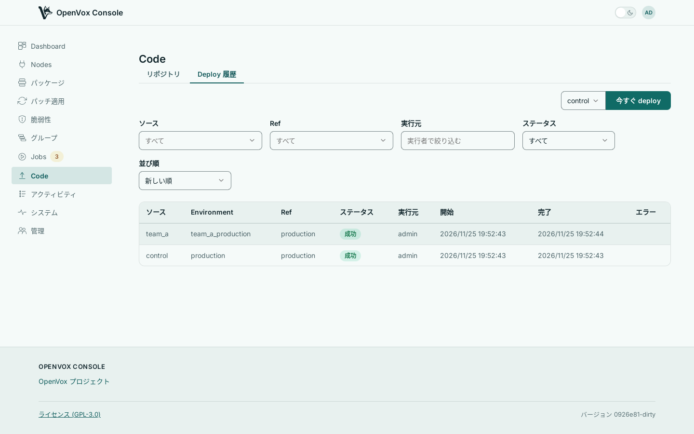

使う
コードを deploy する
1 つ以上の control リポジトリから、openvoxserver がコンパイルに使う Environments へ Puppet コードを deploy します。
コンソールは g10k を使い、control リポジトリ (git 上の Puppetfile と manifests) から openvoxserver が読む environments ディレクトリへ Puppet コードを deploy します。control リポジトリの各ブランチが 1 つの Environment になります。
deploy の閲覧には code:read が、deploy の開始には code:deploy が必要です。
コード deploy を有効にする
コード deploy は、g10k がどこにあるか、何を deploy するか、どこに置くかをコンソールが知るまで無効のままです:
| 設定 | 説明 |
|---|---|
CONSOLE_G10K_BIN_PATH |
g10k プログラム。コンソールのコンテナイメージには g10k が含まれており、この設定も済んでいます |
CONSOLE_CONTROL_REPO_URL |
deploy 元となる単一の control リポジトリ |
CONSOLE_CODE_SOURCES_PATH |
または代わりに、複数のリポジトリを宣言したファイル (後述) |
CONSOLE_CODE_DIR_PATH |
openvoxserver がコードを読み込むディレクトリ。コンソールはその environments ディレクトリに deploy します |
CONSOLE_CODE_WEBHOOK_SECRET |
git ホストの webhook の署名に使われるシークレット |
CONSOLE_CONTROL_REPO_URL と CONSOLE_CODE_SOURCES_PATH を両方設定することはできません: コンソールはこれらを組み合わせるのではなく、起動を拒否します。
コンソールと openvoxserver はそのディレクトリを共有する必要があります。1 台のホストでパッケージを使う場合は、CONSOLE_CODE_DIR_PATH を /etc/puppetlabs/code に向け、コンソールのユーザーがその environments ディレクトリに書き込めるようにします。
コンテナスタックの場合
本番用の compose ファイルは、これらの設定をコンソールに渡さず、openvoxserver のコードボリュームもコンソールに与えません。その横の compose.code.yml で両方を追加します:
services:
console:
environment:
CONSOLE_CONTROL_REPO_URL: ${CONSOLE_CONTROL_REPO_URL:?set the control repository}
CONSOLE_CODE_DIR_PATH: /etc/puppetlabs/code
CONSOLE_CODE_WEBHOOK_SECRET_FILE: /run/secrets/code_webhook_secret
volumes:
- openvoxserver-code:/etc/puppetlabs/code
secrets:
- code_webhook_secret
secrets:
code_webhook_secret:
file: ./secrets/code_webhook_secret
次に、すべてのコマンドでメインのファイルの後にこれを指定します:
docker compose -f docker-compose.yml -f compose.code.yml up -d console
この組み合わせは、インストールガイドのように最初から最後まで通して検証されたことはまだありません。deploy が成功したのに openvoxserver がコードを認識しない場合は、両方のコンテナの /etc/puppetlabs/code/environments に同じファイルが見えることを確認してください。
複数の control リポジトリから deploy する
複数のリポジトリから deploy するには、YAML ファイルでそれらを宣言し、CONSOLE_CODE_SOURCES_PATH をそのファイルに向けます:
sources:
control:
remote: git@github.com:org/control-repo.git
prefix: false # branch production -> environment production
team_a:
remote: git@github.com:org/team-a-control.git
prefix: true # branch production -> environment team_a_production
private_key: /etc/openvox-console/keys/team_a
webhook_secret_file: /etc/openvox-console/team_a_webhook
- ソース名は Environment 名の一部になるため、使用できるのは英小文字、数字、
_だけです。 prefixは、ソースのブランチから生成される Environment 名を決めます:trueならソース名を接頭辞として付け、falseまたは未設定なら接頭辞なし、文字列ならそれを接頭辞として使います。2 つのソースが同じ接頭辞になることは許されないため、接頭辞なしにできるのは最大 1 つです。そうでない場合、コンソールは起動を拒否します。- ソースごとに独自の deploy キーと独自の webhook シークレットを持てます。
接頭辞付きの新しいソースは deploy に成功しますが、Node がその新しい Environment 名に分類されるまでは何も変わりません。Node を自動的にそこへ移すものはありません。
Deploy する
Code を開きます。リポジトリタブには各リポジトリが Environments と最後の deploy とともに一覧表示されます。リポジトリの Deploy は、その production ブランチを deploy します。Deploy 履歴タブの今すぐ deploy は、既定のリポジトリに対して同じことを行います。
同じ Environment の deploy は、コンソールインスタンスがいくつ動いていても重なることはありません。各 deploy は、開始したユーザーとともに deploy 履歴とアクティビティページに表示されます。


push のたびに deploy する
ブランチが push されるたびに deploy するには、git ホスト上のリポジトリに webhook を追加します:
- URL:
https://console.example.com/api/v1/code-deploys/webhook。複数のソースのうちの 1 つの場合はhttps://console.example.com/api/v1/code-deploys/webhook/<source name> - Content type: JSON
- Secret: そのソースの webhook シークレット
- Events: pushes
コンソールは各配信の署名 (X-Hub-Signature-256 ヘッダー) をシークレットと照合し、push されたブランチを deploy します。
リポジトリタブの読み方
各リポジトリには 2 つの Node 数が表示され、その差こそが有用な情報です:
- 割り当て済み: 分類によってこのリポジトリのいずれかの Environment に送られる Node。
- 報告中: 最新の Puppet run でそのいずれかを使用した Node。
割り当て済みで報告がない場合は、deploy は済んだもののまだどの Node も実行していないコードを意味します。報告中で割り当てがない場合は、どのグループも送っていないコードを Node が実行していることを意味します。たいていは削除されたソースが残した Environment か、自身の puppet.conf で environment を設定している Node です。
サイズはデプロイされたファイルのサイズであり、ディスク使用量ではありません: g10k は Environment 間でモジュールを共有するため、リポジトリのサイズは重複します。
設定からソースを削除すると、その deploy は止まりますが、Environments はディスク上に残り、openvoxserver はそこからコンパイルを続けます。それが意図したことなら、自分で削除してください。